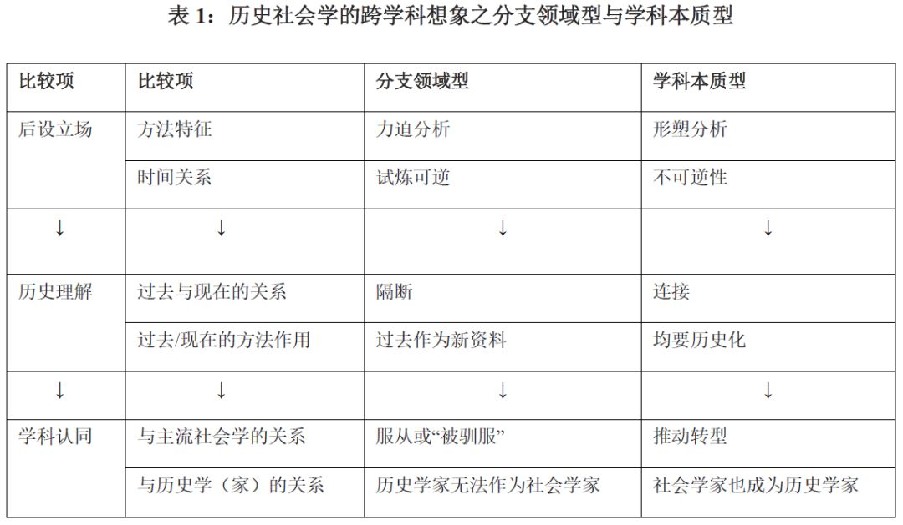
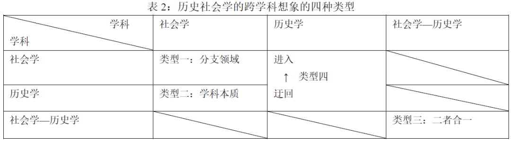

收录于合集
摘要： 历史社会学在社会学中的学科位置及其正当性仍是个具有争议的问题。本文从历史社会学的跨学科想象出发，梳理出以分支领域型和学科本质型为代表的两种流派。前者在方法论上向主流社会学靠拢，认为历史社会学只是社会学的分支，历史学家无法是社会学家，而后者则从历史质性的角度认为历史社会学是社会学的学科本质，致力于推动主流社会学转型，认为社会学家要成为历史学家。这两派虽有分殊，但都存在“学科的大国沙文主义”和“孤岛隔绝化”吊诡并存的跨学科想象症结。相较于过于理想化地将社会学与历史学二者合一（即第三种流派），本文提出第四种主张：建立“迂回历史学、进入社会学”的理论研究纲领式对话。
关键字： 历史社会学；跨学科；理论研究纲领；方法论
致谢： 感谢韦岱思（Thijs Velema）、李钧鹏老师的意见。文责自负。
文献来源： 孙宇凡:《把历史学带进来：历史社会学的跨学科想象与策略》，《社会理论学报》2018年第21期，第379-401页。
作者简介： 笔名高行云，公众号Sociological理论大缸创办人，台湾中山大学哲学所硕士生，正在菲律宾做博士论文田野工作，努力搭上“一带一路”假装在发财。
一、导言：跨越学科边界的
“想象的历史社会学共同体”
虽然美国的“反历史社会学”在20世纪40年代达到了全盛时期，但米尔斯（Charles Wright Mills）在十年后便写下了《社会学的想象力》一书，严厉批评了当时不讲究历史的脉络性的“宏大理论”和“抽象的经验主义”，提出“把历史带回来”的主张，预示了历史社会学的兴起。确实，1960年代，历史取向和文化取向、女性主义和批判取向形成社会学的四股逆流，逐渐在“宏大理论”和“抽象的经验主义”的主流包围中建立了自己的学科位置。经历了二十年的发展，历史社会学在80年代便进入了柯林斯所说的“黄金时代”。一批具有代表性、学科影响的历史社会学家及其著作问世（例如蒂利、斯考切波等），研究范围也往回追溯数世纪和主要地区。正在历史社会学努力证明自己的历史视野和学科贡献时，20世纪80年代末和90年代初的学科内部方法论论战，把历史社会学“驱赶到”社会学学科主流的对立面。1996年，卡尔˙霍恩便写下来了定论之言：“历史社会学被驯服了（domestication）”。随着世代更替，新一代的历史社会学家在2005年又集体发表宣言以自证身份，但不仅没有带来历史社会学和主流的新一轮交锋，反而带来了历史社会学内部老一代和新一代间的学科定位与特色的争论。
历经六十载，历史社会学家们似乎对历史社会学的定位仍无共识。
究竟为什么历史社会学的发展经历了如此的波折？历史社会学如何处理自己和社会学主流的关系？历史社会学内部究竟有何分化？他们如何看待自己的实践工作、学科位置与学术认同？他们认定的历史社会学的“主题素材”（subject matter）到底是什么？
归结起来，这些学科分野与学科任务的认定问题都涉及到历史社会学家们在学术书写时的“自我意识”。本文将指出历史社会学：在“把历史带进来”的同时，也不得不面对“把历史学带进来或排出去”的问题，因为当他们面前来自于社会学学科主流的批评时，不得不要处理历史社会学在历史学和社会学间的关系：如果属于历史学，那么还是社会学吗？如果只属于社会学，那么还可以属于历史学吗？可以既属于历史学又属于社会学？如果都属于，那么社会学和历史学的关系又是什么样的？这样的“想象的学术共同体”的自我意识问题，实则关系到跨学科分析视角。因此，本文采取这一取向进入纷乱沧桑的历史社会学史。
本文将依次从三个方面开展分析：
第一，我将整理历史社会学自我意识的三种类型。首先是分支领域型（subfield）：认为历史社会学只是社会学的一个分支，服从学科主流的方法论，认为历史学家不能作为社会学家；其次是学科本质型（disciplinary essence）：认为历史社会学是社会学的学科本质，致力于社会学转型，指出社会学家也要成为历史学家。最后是二者合一（unity）型，认为有必要取消历史学和社会学学科边界，将二者合并成一个学科。
第二，我将指出前两个类型的共同假设上的问题和挑战：学科的大国沙文主义（discipline-based great power chauvinism）和孤岛隔绝化（ghettoization）的吊诡共存；指出第三种类型在论证上存在的不可行性。
第三，为克服上述的弊端，促进历史社会学发展，我将从“什么—问题”（what-question），“在哪—问题”（where- question）和“如何—问题”（how-question）三个方面提出与详述作为补充与诊疗的第四种方案：迂回—进入（detouring- accessing），即迂回历史学社群吸收已有成果后再带到社会学社群中开展新的对话。
二、类型一：
历史社会学作为社会学的分支领域
认同历史社会学是历史社会学的分支领域的学者往往认为该系的力迫分析（forcing analysis），可以在时间上可逆地“试炼”（trial）不同的分析方案，并在过去与现在隔离的情况下只将过去作为分析的新资料，从而得出自己是顺从社会学学科主流，无法接受社会学家也作为历史学家。
此类历史社会学将历史现象、事件、过程分拆成一个个零件，然后根据社会学知识库存中理论范畴加以收编，形成一个个变量，诸如社会经济地位等。在此基础上，学者只需观察固定不变的（fixed）诸个变量范畴之间如同弹球相撞般过程。由于此类历史社会学能够将不同的历史真实情况化约为相互独立且对等的事体，所以在力迫分析的学者眼中是“范畴”或“变量”在变而非历史在改变，也因而能够从事“试炼”的工作：将不同的因素之间进行求异或求同分析，得出最后事件、现象或过程（如革命）发生的可概化的、普遍的原因，例如斯考切波从军事等变量对革命的比较研究。因此，这种力迫分析来自于研究者的介入分析时对历史进程加以变量范畴化形成的试炼效果。
从这个角度来看，历史社会学与抽样调查的统计分析遵循了同样的分析逻辑，因而尽管该系学者无法像从事人口普查式学者那样，对当前此刻研究对象从事问卷发放与回收一样的调查工作，但是历史分析却使得“过去”构成了相较“现在”的新资料。
这样的方法、时间与资料类型的考虑，使得他们得以立足于社会学的主流学科位置，使其要与历史学区分出来。具体地讲，这一脉的历史社会学家仍是以“老套路”来看待历史学，将之视作“只会搜集资料的蚂蚁型经验主义者”，而即使承认历史学已经向社会科学学习，也至多只是将之视作“借用者”而非理论的生产者，更是无法建立普遍理论。
在此基础上，历史社会学又回响了20世纪初关于律则知识（nomothetic knowledge）和个殊知识（idiographic knowledge）之间的争论，认定社会学属于前者、历史学属于后者的关系，并得出结论：历史社会学只能是社会学的、不能是历史学的，而历史学更不能等同于社会学。
三、类型二：
历史社会学作为社会学的学科本质
与分支领栏位型别不同，认同学科本质型的学者则会认为前一类型只会导致历史社会学被社会学主流“驯服”，而他们则要推动社会学主流的转型。在此论调下，他们认为历史社会学其实是“历史化了的社会学”（historicized sociology），因为不管是“过去”还是“现在”，都共享“历史性”（historicity），能够重新理解一般的社会学的议题与论域。
例如蒂利改由从历史取向分析社会学主流的地位获得与不平等研究，认为族群、性别等范畴间的不平等的历史进程是由“精英阶层的剥削、非精英的机会累积、竞争模仿与最终适应”四个机制在历史的偶连性交汇作用而形成的。这样的分析正是反映了学科本质型学者从事形塑分析（formation analysis）的特点：反对以固定不变的范畴或变量看待真实的、不可逆转或不可试炼的历史进程，强调在沧桑变化中从过去走向现在的历史质性。
形塑分析正是回应了米尔斯的“社会学想象力”中将历史维度与个人、社会并列的做法，认为社会学分析不能脱离和超越历史，因而“所有的社会学都应当叫‘历史社会学’”。由此，这一系学者认为，仅以方法划分和认同来驯服历史社会学，不仅具有误导性，也束缚了历史思考向社会学中更广泛范围的渗透与传播。
不过，当他们企图以这样的方式理解“历史社会学是什么”的时候，又会认识到自己一方面被主流社会学或被驯服的历史社会学攻击其不够“科学”，另一方面又被历史学批评不够挖掘“一手档案”而在历史质性大打折扣。
为此，他们提出的解决方案是打破将一手档案的使用水平视作历史学家与社会学家分界的指标，发出“向档案进军”（Go to the archives）的号召，使得历史社会学家逐渐被要求“像对历史学家的期望得那样，做高质量、原创的、档案式的一手资源研究，同样又不丧失社会学式的概化（generalization）”。据统计分析显示，虽然历史社会学作品普遍混合地使用一、二手档案，但确实在2005年以来，美国社会学学会的历史社会学分会获奖作品中对一手档案引用频数已然增加。
这两种历史社会学自我意识的比较见下表。

四、对第、二种类型的共同反思：
学科沙文主义与孤岛隔绝化的吊诡式并存
上述两种类型存在共同的跨学科性问题：学科沙文主义与孤岛隔绝化的吊诡式并存。具体来说，这两个特征都是直接忽视或不去实际了解其交流学科（即历史学）的具体发展，但前者重在以本学科为中心本位，强调此学科对彼学科间的关系（如排除与区分），后者是重在满足本学科内部的交流与发展，强调此学科内部的关系。
斯坦梅茨一针见血地指出历史社会学的自我中心本位所隐含的这两个弊端：
我们的学科[社会学]好像是相信马克斯˙韦伯发明了历史，并且直至20世纪60年代社会学家才又对历史感兴趣之前，历史都是消失的。事实上，比较历史社会科学出自于历史学，并且大部分经典作品也是历史学家所作的。
换句话，一旦走向这种“学科的大国沙文主义”，便会停下对其它学科了解与吸收的意愿，逐渐只满足于自己范围内的学术生产与交流，进一步走向“孤岛隔绝化”。正如库玛总结那样，历史社会学家基于“他们希望做历史要比历史学家做得更好”的念头，反而导致了历史社会学更加“隔绝化”（ghettoization），其学术交流对象已是其他历史社会学家而非历史学家，无需再考虑到历史学家作品，以致在具体研究“革命”的主题时也已习于引用斯考切波、戈德斯通等历史社会学家, 而非以历史学家著称的约翰·达恩（John Dunn）等人的作品。
当然，即使是坚持学科本质观的历史社会学家倡导向历史学家的身份转变，但也只是停留在一手档案使用方面而已，并非正视历史学家作为理论上的对手与合作对象。正如新生代历史社会学家在解释自身使命的时候时所说——“在历史中寻找形式”（finding form in history）、将跨案例的范畴建构及其操作化作为历史社会学与历史学的区分、作为“社会学承诺” 。其背后的假设是：因自身的“历史化了”（historicized）主张而放松了法则知识与个殊知识分界，却也同样地直接从社会学本位出发，而不对理论—资料划分放手，没能更实际地理解历史学的多种可能，例如已经理论化的社会科学史学，远如以上两种类型想象得那么僵化。
麦克唐纳指出，早在1954-1963年间便由社会科学研究理事会（Social Science Research Council）掀起的历史学从向社会科学理论借用到将理论反补回去的讨论，并批评李普塞特等人关于社会学与历史学之间的理论—资料划分、斯考切波忽视历史学进展的问题，甚至直接提出“为什么社会学家是如此地再生产历史学实践的‘僵化’图景”之疑问。更不用提，1974年便成立的社会科学史学协会（Social Science History Association）对于历史学走出叙事分析，吸收社会科学成果的重要影响。而据苏维尔回忆，美国历史学在20世纪60年以来的社会史及随后的文化史转向，都是受到社会学的方法（如量化分析）或理论（如格尔茨）的影响。
那么，如果还要坚持学科上的大国沙文主义和孤岛隔绝化，最后可能会产生“重复发明车轮”的不利后果。从跨学科的角度来看，在遮盖、不去引用与分析历史学已有的同议题研究的时候，便难以判断历史社会学成果的真正价值，从而可能只是做重复的工作。
五、第三种类型？
理想大于实际的“二者合一”
尽管这一脉与第二种自我意识有相似之处，但区分在于它的直接参考框架不仅是社会学的内部划分，而更是历史学—社会学的跨学科关系。在此基础上，有关学者进一步指出两个学科在后设意义上共同纲领，将之合并为同一单元。
艾布拉姆斯较早地提出了这样主张：
将历史学与社会学看作是一个整体，并重建为历史社会学可能更为有益。……。[因为]这两个学科做同样的事情、采取同样的解释逻辑，……。其核心也是共同的项目。……都是要去解人类的能动性、社会的结构动作（social structuring）之过程的谜团。
不同于艾布拉姆斯指出理论上“共同的项目”，霍尔是以“共享的诸策略”（shared strategies）——以“价值—叙事—社会理论—解释”作为话语形式的秩序安排（ordering form of discourse）为基础，用 “社会历史探究”（sociohistorical inquiry）的名称表明要抛弃了划定学科边界的做法，进而只标定了历史学式社会学（historical sociology）、社会学式历史学（sociological history）两种“探究取向”而非学科划分，并建立了列联表式分类学。
斯坦梅茨的处理方法与艾布拉姆斯的理论取向、霍尔的策略取向均不同：他以类似于历史回顾的办法，梳理出魏玛德国时期阿尔弗雷德·韦伯（Alfred Weber）所说的 “Geschichts-Soziologie” (history-sociology or historical sociology)——去除社会学与历史学两个学科边界以形成的“第三”空间（the ‘third’ space）或“带连字号的社会学”（hyphenated sociology），由此主张将历史社会学与历史学之间的划分视作“灾难的”。
按他所说，当时的德国社会学受到德国新历史主义影响甚重，已然拒绝了目的论式、进化论式的历史观以及普遍法则解释观，形成了由偶连性、集体的人类能动性所构成的社会变迁观。同时，在外部环境上，德国社会学也通过以诠释风格与法国的实证传统形成区分、向历史学家延聘社会学教席、借助德国社会学会与政治倾向力量，形成了社会学面向历史学的开放性。
第三种自我意识的理论、策略与历史三种具体取向各有不足：
首先，艾布拉姆斯合并历史学与社会学的学科，是为了以历史的方法解决社会学家所面对的理论问题—能动性与结构争论，因而才会发出与基质观学者同样声称：“社会学作为历史学”（sociology as history）——其历史学印象当然也便是按需所见，未按历史学实际加以论证。换句话说，艾布拉姆斯的论证逻辑是：社会学是历史社会学（先接受本质观），所以社会学是历史学（再迈进二者合一观）。
对此，戴蒙德甚至不客气地评论，艾布拉姆斯没有给出历史社会学的清晰定义、其理论主张（“社会结构作为时间中的过程”）以及社会学与历史学的整合方案都只是作为结论却缺乏关于“怎么做”（How）的论证。历史学家彼得·伯克在批评时更是道出了历史学视角的反视：历史学已满是诸种“形容词的历史学”（adjectival history），如城市史、经济史等等，那么学科的二合一究竟还能怎样开展呢？
确实，以上三种自我意识中对两种学科的“划分”，其实都是假定了能够完整且单一地掌握历史学与社会学，但显然这种做法既不符合学科实际，也高估了学者能够掌握学科能力的范围。难怪斯坦梅茨提出警告：要区分跨学科论述中应然与实然分离的状态！
其次，霍尔的策略取向合并方案是建立于假设：“所有的历史学都必须或明或暗地是‘社会学的’，所有的社会学（即使是形式理论），也必须将历史性作为纳入为其中的一个维度，才能够是恰当的。” 但是，这样的假设何以可能，也正是需要论证的内容。
同时， 霍尔梳理出来的两种探究取向（历史学式社会学、社会学式历史学），只是重置了社会学与历史学的学科位置，并没有直正地取消学科边界，算不上“二者合一”。更要紧的是，其中安置了8种分类虽各得其位元，但由于过于静态，以致无法理解如何跨越种类（例如从历史学式社会学的子项到社会学式历史学的子项）的内部沟通与运作。因此，该跨学科方案分类学看似周密，其实不仅是基于值得论证的假设，而且没有达到真正的跨学科沟通目的。
最后，斯坦梅茨的历史取向合并方案只将“学科”改为“场域”（field）来挖掘与识别德国社会学学科变动情况。其中，他将宏观社会危机等“外于科学的变迁”（extra- scientific changes）作为主动影响因素，将“内于科学的过程”（intra-scientific process）（例如历史学与社会学间的关系）作为被动因素，因此焦点在于前者而非后者，没有对魏玛时期德国“历史学—社会学”所指为何、内部理路怎样投入精力分析。同时，即使从他对“外于科学的变迁”过程的分析来看，也只是以“社会学”这个学术社群为观测点，而非历史学或者兼顾两个学术社群，仅仅考察其中历史学成分的增减罢了。
由此可知，意在将历史学与社会学二者合一之途还没有明确的可行方案。他们要么以结论代替论证，要么重制度环境的外在逻辑而非学术演进的内在逻辑。因此，尽管第三种方案的愿景是美好，但实际成果使之难以纳入应用。
六、迈向第四种类型：
“迂回与进入”
由于分支领域型、学科本质型和二者合一型的三种历史社会学自我意识要么对历史学的发展忽视或轻视，要么在方案的可行性上难以立足。因此，历史社会学的发展历程呈现分歧、波折、被边缘化等不成熟或衰退情况也在所难免。究竟什么样的自我意识能够克服现存的学科的大国沙文主义和孤岛隔绝化的问题呢呢？如上所述，在面临“重复发明车轮”的危险下，需要重视历史学这一交流学科的已有成果，才能让发明不再重复，在交流之中破除已有弊端。故此，本文提出要迂回历史学、再进入社会学，以具体作品的具体分析为中心而非以学科的单一判断为中心，将历史学的成果“说”给社会学学者“听”。
首先涉及到“什么的”（What-）问题：何为迂回与进入？
这一学术方法战略上也是受到了跨文化哲学家于连（François Julien）的启发。他认为迂回与进入是“通过进入中国思想世界来走出希腊哲学王国，并通过这种 ‘迂回’ 的战略选择去追问欧洲理性的深处，以期‘进入’我们的理性传统之光所没有照亮的地方”，是“一种思想的’换域’”，能够使得“不言自明的选择浮现”。
由此，经由历史学，进入社会学，将能够反思与更新直接从社会学学科出发所被遮掩的历史学图景，避免由于学科沙文主义和孤岛隔绝化带来的自我中心弊端，并通过注入历史学的新鲜生命带至更新历史社会学既有视角的效果，从而达至“换域”的跨学科成效。这在策略类型与其它三者的参考位置关系见下：

其次涉及到“在哪的”（Where-）问题：在理论研究纲领之中展开。
相较于连建立将东西方哲学联系起来的比较框架，本研究支撑将历史学带入社会学对话的框架是“定位战略—理论研究纲领—单位理论”的光谱上：
定向战略（orienting strategy）是后设理论的结构（metatheoretical structure）。尽管是由相互关联的概念、目标、标准、预设以及指引所构成的系统，但其中的多数元素是非经验的（nonempirical），例如功能主义、冲突理论、理性选择理论等等。理论研究纲领（theoretical research program）是由一些相互关联的诸个单元理论构成，例如资源动员理论、认同理论等等。单元理论（unit theory）是一些以理论为基础的经验模型（theory-based empirical models），通过诸概念、诸原则将抽象结构与经验实在关联起来以解释特定的确切现象。
泽尔蒂奇等人对理论划分看似是三，实则是两种二分法：
第一，非经验解释的理论（定向战略）和经验解释的理论（理论研究纲领和单元理论）。这一分类意味着对于“何为理论”的纷乱定义中，是采取了解释取向（explanation- based），而非只是从世界观（worldview）等角度加以定义。第二，实体的类型（entity-type）和关系类型（relation- type）：前者包括定向战略和单元理论，都是可以自我定义的、单数的理论，而理论研究纲领却看似更“虚”，只是单元理论间的关系网络。因此，理论研究纲领不是实体的纲领，而只是关系的纲领。
正因如此，相较来看，历史学研究的历史社会世界，与自然世界不同，是具有“概念依赖的”（concept- dependent）因而尽管未必如“演绎主义”那样“以理论为基础的经验模型”，但仍不可否认能够满足“单元理论”的要求。因此，在整个学科知识的格局中，历史学的知识只需要在理论研究纲领层面进行关系式联接，便可以展开对话，从而将“历史学带进社会学”。
最后是关于“如何的”（How-）问题：从反覆表达式策略性叙事到关系对话式再脉络化。
斯考切波（第一种类型的代表）在批评艾布拉姆斯（第三种类型代表）的作品的时候便颇有洞见地指出：“好的历史学应当是社会学式的，但要有直接的理论设计从而能够开启诚挚而充分的讨论。”因此，为了将历史学成果解读给社会学者听，本文提出两个步骤：
策略性叙事（strategic narrative）。该步骤即“迂回”，重点是双向地反复反覆运算。这是要在特定历史学文本中不断调整其中的经验与概念、诸种经验之间的相互关系，直至在“混乱的开放性”（the anomaly unfolds）能够找到一个合适的解释和形成单元理论。
再脉络化（recontextualization）。该步骤即“进入”，重点是在和社会学中已有的同类型的单元理论开展对话，并依据理论研究纲领中的几种理论关系进行匹配，指出历史学成果的社会学贡献。在这步骤中，只包括由社会学家们所组成的“研究的脉络”（the context of investigation），不再考虑依时依地的依赖性（time- and space- dependent）脉络。因此，这里实际是将历史学家看为行动者，其历史学文本是阅读历史世界所得的解释，是在 “解释的脉络”（the context of explanation）。
当然，本文并不是认为所有的历史学研究都能具有社会学对话的贡献，也不认为所有的历史学成果都能调整出优质的单元理论。但是，一旦再脉络化、对社会学的已有的单元理论带来新的挑战，那么历史学—社会学之间依具体作品，形成了几种关系：详述（elaboration）、扩散（proliferation）、变异（variation）、竞争（competition）、整合（integration）：
一是详述：尽管H（即迂回与进入的历史学作品观点，下同）与S（即被关联到的社会学作品观点，下同）共享同一个理论上的核心理念（core idea），但是H比S有更多的经验基底（empirical grounding）； 二是变异：H和S共享核心理念，但是在理论细化的时候各自以不同的机制去解释同一经验领域中的不同情况； 三是扩散：H将S的核心理念带到了新的领域，在不更改二者共享的核心理念的基础上进行调整，从而解释新的经验，如同分芽繁殖；四是竞争：H与S有不同的核心理念，竞争解释同样的经验领域；五是整合：提出另一种核心理念所支撑的H0，建立原本处于竞争或变异情况下H与S二者以各自条件化（conditioning）的方式加以整合。
因此，通过理论研究纲领的理论间关联类型，呈现了一个动态的、累积的跨学科成果发展。如上表所示，历史学作品及其对话的社会学作品具有丰富的直接关系，而这些关系由于解释的经验领域的差异，也导致对历史学作品的进一步需求，使得后续其它历史学作品为追求新的详述、变异、扩散、竞争甚至整合，而带来新一轮、更高层次的对话。
七、结论
麦克唐纳在二十多年前质问历史社会学学界——“为什么社会学家再生产历史学实践的‘僵化’图景？”进一步的追问是：如果我们接受历史学已经受到社会科学的冲击，我们是否应当忽视了反方向冲击的可能？或者者：如何在历史社会学的实践中尊重历史学？这种尊重正是构建新型的“想象的历史社会学共同体”之基础。
从既有的两种主流类型（将历史社会学看作社会学的分支领域，和将历史社会学看作是社会学的学科本质）来看，背后都是立足于社会学本学科的自我中心本位，因而不可避免地染上了吊诡式想象症结：学科上的大国沙文主义和孤岛隔绝主义。这两种症结的吊诡共存，使得历史社会学日益成为一个封闭的学科交流社群，更倾向于引用自身传统的作品而非来自历史学传统的作品，更固定且单一地看待历史学和社会学，而不是从“形容式的历史学”（如城市化、妇女史）等方面，具体切实地了解历史学究竟在做什么。
尽管斯坦梅茨、霍尔等学科致力于将历史社会学看作是历史学和社会学合二为一的后果（第三种类型），但通过分析的理论、策略、历史的分析可知，这种“二合一”的历史社会学想象终究过于理想，缺乏扎实的论证与实践的指导。
为此，本文提出了迂回历史学、进入社会学的第四种类型，瞄准了该领域的两大难题，对话与合作。本文在最后也提出的策略性叙事、重新脉络化与理论研究纲领的观点，并非主张是要全盘代替现行的、经验解释性的历史社会学研究，而是希望提供一种动态对话的实践方案：
第一，在历史社会学家坚持社会学学科位置的时候，也要同时挖掘与尊重历史学（尤其是社会科学史学）的已有成果。
第二，在历史社会学家像历史学家从事一手档案分析的时候，要同时避免“重新发明车轮”。
第三，在历史社会学家想当然地把历史学和社会学当成一回事的时候，努力避免静止地思考而是要更为动态和发展地促进跨学科实践。
第四，在历史社会学想象自身的实践之正当性的时候，要当从跨学科沟通与对话的角度，将历史学的已有成果和社会学的已有主张之间建立理论研究纲领式对话，探讨其中的详述、扩散、变异、竞争或整合的可能性。
编辑：吴温泉